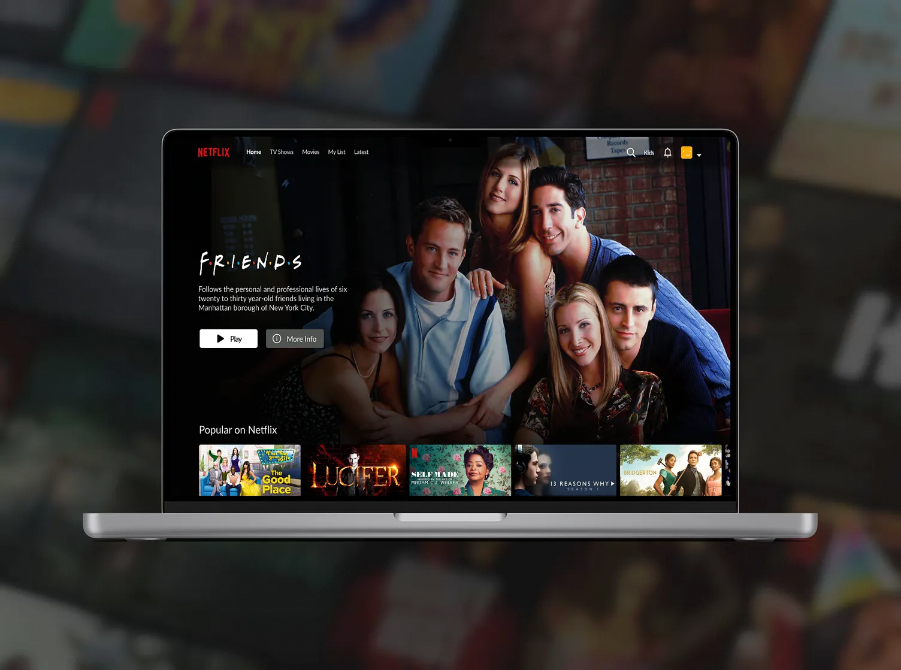
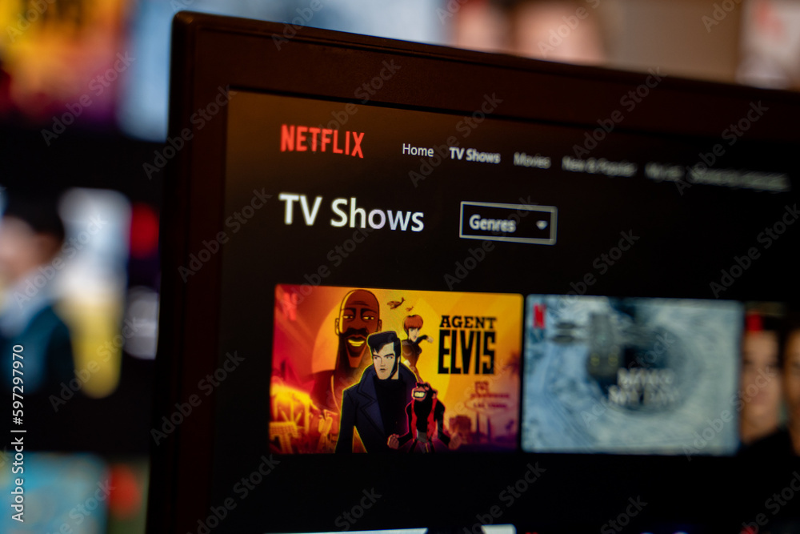

|
Help Center
Join Netflix
Sign-In
Back to Help Home
What is Netflix?

Related Articles
Getting started with Netflix
Billing and Payments
Netflix Gift Cards
Can't sign in to Netflix
How to create, edit, or delete profiles
Netflix is a subscription-based
streaming service
that allows our members to watch TV
shows and movies on an internet-connected device.
Depending on your plan
, you can also
download TV shows and movies
to your Android phone or tablet, iPhone, iPad,
or Google Chromebook device and watch without an internet connection.
If you're already a member and would like to learn more about using Netflix, visit
Getting started with Netflix
.
TV Shows & Movies

Netflix content varies by region and may change over time. You can watch a variety of
award-winning Netflix
originals, TV shows, movies, documentaries, and more
.
The more you watch, the better Netflix gets at
recommending
TV shows and movies.